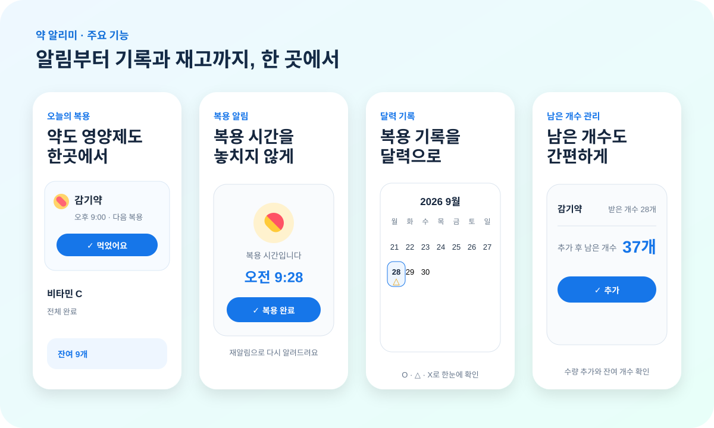

⏰
복용 시간 알림
약 또는 영양제별로 복용 시간과 반복 일정을 설정하고 필요한 시간에 알림을 받을 수 있습니다.
약 알리미는 사용자가 등록한 일정을 바탕으로 복용을 알리고, 완료 여부를 남기고, 달력에서 기록을 확인하고, 남은 수량까지 관리할 수 있도록 설계했습니다.
약 또는 영양제별로 복용 시간과 반복 일정을 설정하고 필요한 시간에 알림을 받을 수 있습니다.
바로 복용하지 못했을 때 다시 알림을 받을 수 있어 일정에서 놓친 복용을 확인하기 쉽습니다.
복용 완료 여부를 남기고 날짜별 기록을 확인해 최근 복용 흐름을 되짚어볼 수 있습니다.
일별 기록을 달력에서 O·△·X 형태로 확인하고 특정 날짜의 상세 복용 내역을 볼 수 있습니다.
받은 수량과 남은 개수를 관리하여 보충할 시점을 파악하는 데 도움을 줍니다.
여러 항목을 각각 등록하고 복용 일정과 수량을 따로 관리할 수 있습니다.
약 알리미의 실제 화면을 바탕으로 핵심 사용 흐름을 한눈에 볼 수 있게 구성했습니다.

약 알리미는 회원가입 없이 사용할 수 있으며, 사용자가 입력한 약·영양제 이름, 복용 일정, 복용 기록, 재고 등은 기본적으로 사용자 기기의 앱 저장공간에 저장됩니다.
약 알리미는 의료기기 또는 의료적 판단·진단·치료를 제공하는 서비스가 아닙니다.
사용자가 스스로 입력한 복용 일정을 기억하고 기록하도록 돕는 관리 도구이며, 의약품 복용과 관련된 결정은 의사·약사 등 의료 전문가의 지시에 따라야 합니다.